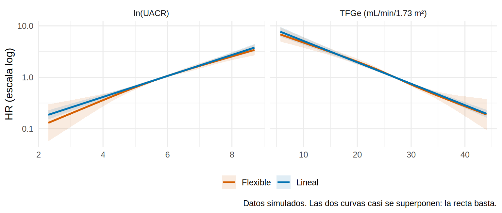
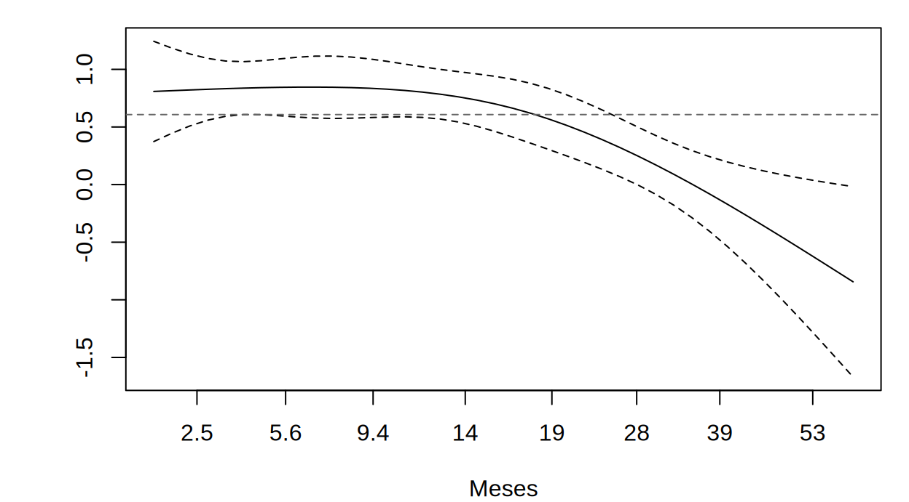
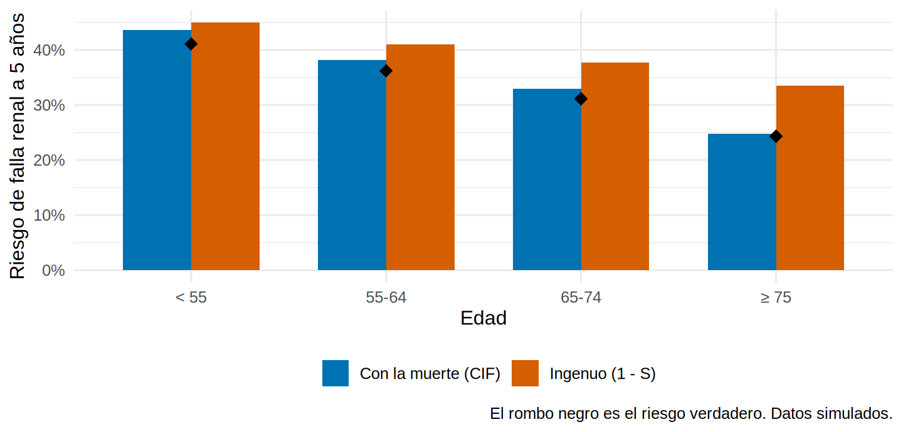

Cómo desarrollar un modelo de pronóstico tipo KFRE
Una paciente de 66 años con TFGe de 25 y albuminuria de 300 mg/g pregunta: “doctor, ¿cuánto falta para la diálisis?”. Con la ecuación de riesgo de falla renal (KFRE, por Kidney Failure Risk Equation; Tangri y cols., JAMA 2011) muchos servicios responden con una cifra: “su riesgo a 2 y 5 años es de tantos por ciento”. Esa ecuación usa pocas variables de rutina (edad, sexo, TFGe y albuminuria). Aquí construiremos nuestra propia versión, paso a paso, sobre la cohorte simulada de 3 000 pacientes, y comprobaremos sus riesgos contra la verdad.
Un modelo de pronóstico (prognostic model) combina varias características basales para estimar la probabilidad de un desenlace futuro en un paciente concreto. No pretende explicar por qué ocurre el evento (eso es causalidad, Cap. 3); pretende acertar en pacientes nuevos. Eso cambia las reglas del juego: importa más la calibración y la validación que la interpretación de cada coeficiente.
Lo que vamos a hacer
- Preespecificar los predictores y revisar si hace falta algo más que una recta.
- Ajustar un modelo de Cox para la falla renal y verificar los riesgos proporcionales.
- Convertir los HR en riesgos absolutos a 2 y 5 años, y ver por qué la muerte (riesgo competitivo) cambia esas cifras.
Recuerda los datos (simulados): estado es 0 si el paciente fue censurado, 1 si llegó a falla renal (diálisis o trasplante) y 2 si murió antes. tiempo_meses llega hasta 60. preparar_pronostico() crea además lu (el logaritmo natural de la UACR), krt (1 si falla renal) y muerte (1 si murió sin falla renal).
Paso 1: preespecificar los predictores
La regla de oro del desarrollo es decidir los predictores antes de mirar cómo se relacionan con el desenlace. Se eligen por tres criterios, no por su valor p: que la literatura o la fisiopatología los respalden, que estén disponibles de forma rutinaria al momento de usar la calculadora, y que se midan de forma fiable. Seleccionar con pruebas univariables o con métodos por pasos (stepwise) produce coeficientes sesgados y peor rendimiento en pacientes nuevos (Efthimiou y cols., BMJ 2024; lectura del autor).
Nuestra lista, escrita antes de ajustar nada:
tibble(
predictor = c("Edad", "Sexo", "TFGe", "ln(UACR)", "Albúmina", "Fósforo", "Bicarbonato", "Diabetes"),
parametros = 1,
por_que = c("Eje de la historia clínica", "Eje de la historia clínica", "Estadio KDIGO (G)",
"Estadio KDIGO (A); asimétrica, por eso el logaritmo", "Nutrición e inflamación",
"Trastorno mineral-óseo", "Acidosis metabólica", "Principal causa de ERC; modifica el curso")
)# A tibble: 8 × 3
predictor parametros por_que
<chr> <dbl> <chr>
1 Edad 1 Eje de la historia clínica
2 Sexo 1 Eje de la historia clínica
3 TFGe 1 Estadio KDIGO (G)
4 ln(UACR) 1 Estadio KDIGO (A); asimétrica, por eso el logaritmo
5 Albúmina 1 Nutrición e inflamación
6 Fósforo 1 Trastorno mineral-óseo
7 Bicarbonato 1 Acidosis metabólica
8 Diabetes 1 Principal causa de ERC; modifica el curso Son 8 parámetros: los 4 de la KFRE original más tres laboratorios de rutina y la diabetes. Con 839 eventos hay 105 eventos por parámetro (17.1): sobra muestra. La ECV previa no entra en el modelo de falla renal, pero sí en el de muerte, como verás en el paso 6.
Paso 2: ¿una recta basta?
Antes de aceptar una relación lineal conviene comprobarla. Ajustamos una versión flexible (con splines cúbicos restringidos, rcs() de rms) y comparamos con la lineal. Si la flexible no mejora, nos quedamos con la recta, que además cuesta menos parámetros.
dd <- datadist(dev); options(datadist = "dd")
f_lineal <- cph(Surv(tiempo_meses, krt) ~ edad + sexo + tfg + lu + albumina + fosforo + bicarbonato + dm,
data = dev, x = TRUE, y = TRUE)
f_flex <- cph(Surv(tiempo_meses, krt) ~ rcs(edad, 3) + sexo + rcs(tfg, 4) + rcs(lu, 4) +
rcs(albumina, 3) + rcs(fosforo, 3) + rcs(bicarbonato, 3) + dm,
data = dev, x = TRUE, y = TRUE)
lr <- lrtest(f_lineal, f_flex)
lr
Model 1: Surv(tiempo_meses, krt) ~ edad + sexo + tfg + lu + albumina +
fosforo + bicarbonato + dm
Model 2: Surv(tiempo_meses, krt) ~ rcs(edad, 3) + sexo + rcs(tfg, 4) +
rcs(lu, 4) + rcs(albumina, 3) + rcs(fosforo, 3) + rcs(bicarbonato,
3) + dm
L.R. Chisq d.f. P
3.0473134 8.0000000 0.9313533 La prueba de razón de verosimilitud compara ambos modelos: la versión flexible usa 8 parámetros más y su mejora no es significativa (χ² = 3.0, p = 0.93). Lo vemos mejor en un gráfico del HR frente a un valor de referencia:
curva <- function(ajuste, variable, etiqueta) {
as.data.frame(Predict(ajuste, name = variable, ref.zero = TRUE, fun = exp)) |>
transmute(x = .data[[variable]], hr = yhat, inf = lower, sup = upper, modelo = etiqueta, variable = variable)
}
bind_rows(curva(f_flex, "tfg", "Flexible"), curva(f_lineal, "tfg", "Lineal"),
curva(f_flex, "lu", "Flexible"), curva(f_lineal, "lu", "Lineal")) |>
mutate(variable = recode(variable, tfg = "TFGe (mL/min/1.73 m²)", lu = "ln(UACR)")) |>
ggplot(aes(x, hr, color = modelo, fill = modelo)) +
geom_ribbon(aes(ymin = inf, ymax = sup), alpha = 0.12, color = NA) +
geom_line(linewidth = 1) +
facet_wrap(~ variable, scales = "free_x") +
scale_y_log10() +
scale_color_manual(values = c(Flexible = "#D55E00", Lineal = "#0072B2")) +
scale_fill_manual(values = c(Flexible = "#D55E00", Lineal = "#0072B2")) +
labs(x = NULL, y = "HR (escala log)", color = NULL, fill = NULL,
caption = "Datos simulados. Las dos curvas casi se superponen: la recta basta.") +
theme(legend.position = "bottom")
Qué vemos. Las dos curvas se superponen: el riesgo (en escala logarítmica) sube de forma lineal a medida que baja la TFGe y sube la albuminuria. Nos quedamos con términos lineales (más sencillos de reportar y con menos riesgo de sobreajuste). Si la curva se doblara, justo ahí valdría la pena gastar parámetros extra en un spline.
Paso 3: ajustar el modelo de Cox para la falla renal
Ajustamos un modelo de Cox específico de causa (cause-specific): modela el riesgo instantáneo de falla renal, y los pacientes que mueren antes salen del conjunto en riesgo como censurados (esto tiene consecuencias importantes en el paso 6). ajustar_modelos_pronostico() ajusta los dos modelos que usaremos en todo el capítulo; aquí mostramos el de falla renal.
mm <- ajustar_modelos_pronostico(dev) # mm$krt (falla renal) y mm$muerte (muerte sin falla renal)
m_krt <- mm$krt
m_krtCall:
survival::coxph(formula = survival::Surv(tiempo_meses, krt) ~
edad + sexo + tfg + lu + albumina + fosforo + bicarbonato +
dm, data = datos, model = TRUE, x = TRUE, y = TRUE)
coef exp(coef) se(coef) z p
edad -0.022030 0.978211 0.003155 -6.982 2.90e-12
sexoHombre 0.121942 1.129688 0.070009 1.742 0.081544
tfg -0.095837 0.908613 0.005274 -18.173 < 2e-16
lu 0.470023 1.600030 0.029181 16.107 < 2e-16
albumina -0.317267 0.728136 0.086297 -3.676 0.000236
fosforo 0.276991 1.319155 0.055870 4.958 7.13e-07
bicarbonato -0.049563 0.951645 0.011223 -4.416 1.00e-05
dm 0.607656 1.836123 0.072866 8.339 < 2e-16
Likelihood ratio test=1012 on 8 df, p=< 2.2e-16
n= 3000, number of events= 839 Los coeficientes están en escala logarítmica. Para leerlos, los pasamos a HR por un cambio razonable de cada variable y los comparamos con la verdad de la simulación:
# Cambio de referencia de cada predictor y su HR verdadero (verdad de la simulación)
escala <- tribble(
~term, ~cambio, ~paso, ~hr_verdad,
"edad", "10 años más", 10, exp(-0.20),
"sexoHombre", "hombre vs. mujer", 1, exp(0.10),
"tfg", "10 mL/min menos", -10, exp(0.95),
"lu", "UACR se duplica", log(2), exp(0.45 * log(2)),
"albumina", "1 g/dL más", 1, exp(-0.30),
"fosforo", "1 mg/dL más", 1, exp(0.25),
"bicarbonato", "1 mEq/L más", 1, exp(-0.06),
"dm", "con vs. sin diabetes", 1, NA
)
co <- summary(m_krt)$coef; ic <- confint(m_krt)
tabla_hr <- tibble(term = rownames(co), b = co[, "coef"], inf = ic[, 1], sup = ic[, 2]) |>
left_join(escala, by = "term") |>
transmute(predictor = cambio, HR = exp(b * paso),
IC95_inf = exp(pmin(inf * paso, sup * paso)), IC95_sup = exp(pmax(inf * paso, sup * paso)),
HR_verdad = hr_verdad)
tabla_hr |> mutate(across(where(is.numeric), \(x) round(x, 2)))# A tibble: 8 × 5
predictor HR IC95_inf IC95_sup HR_verdad
<chr> <dbl> <dbl> <dbl> <dbl>
1 10 años más 0.8 0.75 0.85 0.82
2 hombre vs. mujer 1.13 0.98 1.3 1.11
3 10 mL/min menos 2.61 2.35 2.89 2.59
4 UACR se duplica 1.39 1.33 1.44 1.37
5 1 g/dL más 0.73 0.61 0.86 0.74
6 1 mg/dL más 1.32 1.18 1.47 1.28
7 1 mEq/L más 0.95 0.93 0.97 0.94
8 con vs. sin diabetes 1.84 1.59 2.12 NA Qué vemos.
- TFGe: por cada 10 mL/min menos, el riesgo instantáneo se multiplica por 2.61 (verdad: 2.59); y cada duplicación de la UACR lo multiplica por 1.39 (verdad: 1.37).
- Todos los IC contienen la verdad. El sexo es el caso límite: su efecto verdadero (1.11) es pequeño y el IC (0.98 a 1.3) incluye el 1; para predecir, aun así lo conservamos porque lo preespecificamos.
- La diabetes no tiene una “verdad” única: su efecto cambia con el tiempo (HR 2.6 los primeros 18 meses y 1.0 después), así que el HR único de 1.84 es un promedio de ambas fases. Es el problema del paso 4.
- Estos HR sirven para predecir, no para afirmar que la albúmina o el fósforo causan la falla renal. Ese es el aviso del final.
Paso 4: ¿se cumple la proporcionalidad?
El modelo de Cox supone que cada HR es constante en el tiempo (Cap. 9.4). Para un modelo de pronóstico esto importa por una razón concreta: si un HR cambia con el tiempo, el modelo se calibrará bien en un horizonte y mal en otro.
chisq df p
edad 0.119 1 0.731
sexo 0.373 1 0.541
tfg 0.766 1 0.382
lu 5.275 1 0.022
albumina 0.000 1 0.989
fosforo 0.309 1 0.578
bicarbonato 0.693 1 0.405
dm 20.007 1 0.000
GLOBAL 24.178 8 0.002par(mar = c(4, 4.5, 1, 1))
# El coeficiente de la diabetes a lo largo del tiempo (residuos de Schoenfeld escalados)
plot(zph, var = "dm", resid = FALSE, xlab = "Meses", ylab = "log(HR) de diabetes", main = "")
abline(h = coef(m_krt)["dm"], lty = 2, col = "grey40")
abline(v = 18, lty = 3, col = "#D55E00")
Qué vemos. Solo la diabetes viola la proporcionalidad de forma clara (p < 0.001 en la tabla de arriba): su log(HR) es alto al principio y cae alrededor de los 18 meses (línea naranja), justo como se simuló. La línea discontinua gris es el promedio que usa el modelo. ¿Importa en la práctica? Para medirlo hacen falta riesgos absolutos reales; lo hacemos al final del paso 6, con el oráculo (una cohorte grande, sin censura, de la misma población, donde conocemos el riesgo verdadero). Si la violación es moderada, el modelo se sigue usando; si es grande, habría que modelar la diabetes con dos coeficientes según el tiempo (survSplit(), Cap. 9.4) o estratificar.
Paso 5: de los HR al riesgo a 2 y 5 años
Un HR no es un riesgo. Para dar “su riesgo a 5 años es X %” necesitas además el riesgo basal: la probabilidad de supervivencia sin falla renal de un paciente “promedio” a cada tiempo. La ecuación de un modelo de Cox es:
\[ \text{riesgo}(t) = 1 - S_0(t)^{\exp(\text{LP})}, \qquad \text{LP} = \sum_j \beta_j (x_j - \bar{x}_j) \]
donde \(S_0(t)\) es la supervivencia basal y LP es el predictor lineal (linear predictor), la suma ponderada de los predictores. Un modelo publicado debe dar tanto los coeficientes como \(S_0(t)\): sin la basal nadie puede reproducir tus riesgos (Cap. 17.7).
# A tibble: 2 × 3
meses H0 S0
<dbl> <dbl> <dbl>
1 24 0.124 0.883
2 60 0.270 0.764Ahora el cálculo para tres mujeres de 66 años, sin diabetes, con UACR de 300 mg/g y laboratorios normales, que solo difieren en la TFGe:
pacientes <- tibble(
edad = 66, sexo = factor("Mujer", levels = c("Mujer", "Hombre")), tfg = c(35, 25, 15),
lu = log(300), albumina = 4, fosforo = 3.7, bicarbonato = 23, dm = 0, ecv = 0
)
pacientes |>
mutate(riesgo_2a = riesgo_cox_ingenuo(m_krt, pacientes, 24),
riesgo_5a = riesgo_cox_ingenuo(m_krt, pacientes, 60)) |>
select(tfg, riesgo_2a, riesgo_5a) |>
mutate(across(starts_with("riesgo"), \(x) round(100 * x, 1)))# A tibble: 3 × 3
tfg riesgo_2a riesgo_5a
<dbl> <dbl> <dbl>
1 35 5.1 10.8
2 25 12.8 25.7
3 15 30 53.8Qué vemos. La paciente de TFGe 25 de nuestro escenario tendría un riesgo estimado de 12.8 % a 2 años y 25.7 % a 5 años. Pero atención: esta es la versión “ingenua” (1 − supervivencia), la que calculan casi todas las calculadoras clásicas, y tiene un defecto que explicamos a continuación.
Paso 6: la muerte también compite
En esta cohorte, 482 pacientes murieron antes de llegar a diálisis. Un paciente muerto ya no tendrá falla renal. El modelo ingenuo los trata como si siguieran en riesgo (censurados), y por eso calcula “el riesgo de falla renal si nadie muriera”. Pero tu paciente de 75 años sí puede morir antes: su riesgo real es menor.
La solución es modelar también la muerte y combinar ambas tasas en una incidencia acumulada (cumulative incidence function, CIF; Cap. 9.5). Ajustamos el segundo modelo (con los predictores clínicos de mortalidad: edad, sexo, TFGe, diabetes, ECV y albúmina; ya está en mm$muerte) y comparamos las dos versiones del riesgo a 5 años por grupo de edad contra la verdad del oráculo:
# Oráculo: 100 000 pacientes de la misma población, sin censura; la proporción con falla renal a 60 meses es la verdad
oraculo <- oraculo_pronostico(100000, "desarrollo", semilla = 99)
oraculo <- oraculo |>
mutate(ingenuo = riesgo_cox_ingenuo(mm$krt, oraculo, 60),
con_muerte = cif_cox(mm$krt, mm$muerte, oraculo, 60),
real = as.numeric(estado == 1),
grupo_edad = cut(edad, c(0, 55, 65, 75, 120), right = FALSE, labels = c("< 55", "55-64", "65-74", "≥ 75")))
por_edad <- oraculo |>
group_by(grupo_edad) |>
summarise(verdad = mean(real), ingenuo = mean(ingenuo), con_muerte = mean(con_muerte), .groups = "drop")
por_edad |> mutate(across(where(is.numeric), \(x) round(x, 3)))# A tibble: 4 × 4
grupo_edad verdad ingenuo con_muerte
<fct> <dbl> <dbl> <dbl>
1 < 55 0.411 0.45 0.436
2 55-64 0.362 0.41 0.382
3 65-74 0.311 0.377 0.329
4 ≥ 75 0.243 0.335 0.247por_edad |>
pivot_longer(c(ingenuo, con_muerte), names_to = "calculo", values_to = "predicho") |>
mutate(calculo = recode(calculo, ingenuo = "Ingenuo (1 - S)", con_muerte = "Con la muerte (CIF)")) |>
ggplot(aes(grupo_edad)) +
geom_col(aes(y = predicho, fill = calculo), position = "dodge", width = 0.7) +
geom_point(aes(y = verdad), size = 3.5, shape = 18, color = "black") +
scale_y_continuous(labels = scales::percent) +
scale_fill_manual(values = c("Ingenuo (1 - S)" = "#D55E00", "Con la muerte (CIF)" = "#0072B2")) +
labs(x = "Edad", y = "Riesgo de falla renal a 5 años", fill = NULL,
caption = "El rombo negro es el riesgo verdadero. Datos simulados.") +
theme(legend.position = "bottom")
Qué vemos.
- En el grupo de 75 años o más, el cálculo ingenuo da 33.5 % cuando el riesgo verdadero es 24.3 %: sobrestima en 9 puntos. El cálculo con la muerte (24.7 %) acierta casi de lleno.
- En el grupo más joven la diferencia es mucho menor, porque casi nadie muere antes de la diálisis.
- Las dos versiones ordenan igual a los pacientes (el LP es el mismo), pero solo la segunda acierta en el nivel de riesgo. Discriminar y calibrar son cosas distintas (17.3).
Volvamos a la diabetes del paso 4: ¿cuánto daña de verdad el HR promedio? Comparamos el riesgo predicho con el verdadero en los dos grupos y a 2 y 5 años:
por_dm <- map_dfr(c(24, 60), \(t) {
oraculo |>
mutate(pred = cif_cox(mm$krt, mm$muerte, oraculo, t), real = as.numeric(estado == 1 & tiempo_meses <= t)) |>
group_by(horizonte = paste(t / 12, "años"), diabetes = if_else(dm == 1, "Con diabetes", "Sin diabetes")) |>
summarise(riesgo_predicho = mean(pred), riesgo_verdadero = mean(real), .groups = "drop")
})
por_dm |> mutate(across(where(is.numeric), \(x) round(x, 3)))# A tibble: 4 × 4
horizonte diabetes riesgo_predicho riesgo_verdadero
<chr> <chr> <dbl> <dbl>
1 2 años Con diabetes 0.306 0.315
2 2 años Sin diabetes 0.169 0.152
3 5 años Con diabetes 0.434 0.4
4 5 años Sin diabetes 0.276 0.272El error es modesto: el mayor desacierto es de 3.4 puntos (en quienes tienen diabetes a 5 años: 43.4 % predicho frente a 40 % verdadero). Es el costo de promediar un efecto que cambia en el tiempo: el modelo da algo de más a los diabéticos a largo plazo y a los no diabéticos a corto. Para una calculadora clínica es aceptable.
Nuestra función cif_cox() implementa esa combinación con riesgos mensuales. Se puede contrastar con una implementación estándar:
CSC()
El paquete riskRegression ajusta modelos de Cox por causa con CSC() y predice riesgos absolutos con predictRisk(). Debe coincidir con nuestra función hasta un error pequeño.
library(riskRegression)
csc <- CSC(list(Hist(tiempo_meses, estado) ~ edad + sexo + tfg + lu + albumina + fosforo + bicarbonato + dm,
Hist(tiempo_meses, estado) ~ edad + sexo + tfg + dm + ecv + albumina), data = dev)
riesgo_csc <- as.numeric(predictRisk(csc, newdata = pacientes, times = 60, cause = 1))
riesgo_propio <- cif_cox(mm$krt, mm$muerte, pacientes, 60)
round(rbind(CSC = riesgo_csc, propio = riesgo_propio), 3) [,1] [,2] [,3]
CSC 0.101 0.241 0.509
propio 0.101 0.240 0.506Paso 7: ¿y una regresión logística?
Con un desenlace como “falla renal a 2 años” se puede usar una regresión logística, que es más simple de explicar y es la base de muchas calculadoras. Pero tiene un requisito: debes conocer el desenlace de todos al horizonte elegido. Veamos cuántos pacientes lo tienen:
# Desenlace conocido a 24 y a 60 meses: evento antes del horizonte, muerte antes (cuenta como "no falla"),
# o seguimiento completo hasta el horizonte. Los censurados antes del horizonte son desconocidos (NA).
estado_en <- function(d, t) ifelse(d$krt == 1 & d$tiempo_meses <= t, 1,
ifelse(d$tiempo_meses >= t | d$muerte == 1, 0, NA))
conocidos <- c("2 años" = sum(!is.na(estado_en(dev, 24))), "5 años" = sum(!is.na(estado_en(dev, 60))))
conocidos2 años 5 años
2939 1357 A 2 años conocemos el desenlace de 2939 de 3000 pacientes (casi todos), así que la logística es viable. A 5 años solo de 1357: más de la mitad fueron censurados antes de cumplir 5 años. Descartarlos desperdicia información y ya no sabes si sesga; por eso la regresión de supervivencia (Cox) es la herramienta natural para horizontes largos. Comparemos ambas a 2 años:
d24 <- dev |> mutate(y24 = estado_en(dev, 24)) |> filter(!is.na(y24))
log24 <- glm(y24 ~ edad + sexo + tfg + lu + albumina + fosforo + bicarbonato + dm, family = binomial, data = d24)
comparacion <- tibble(logistica = predict(log24, d24, type = "response"),
cox_con_muerte = cif_cox(mm$krt, mm$muerte, d24, 24))
c(media_logistica = mean(comparacion$logistica), media_cox = mean(comparacion$cox_con_muerte),
correlacion = cor(comparacion$logistica, comparacion$cox_con_muerte)) |> round(3)media_logistica media_cox correlacion
0.228 0.227 0.993 Las dos aproximaciones coinciden casi exactamente (correlación 0.993, y el promedio de riesgos es prácticamente igual): no es casualidad, porque una logística de “evento antes de 2 años” estima justamente la incidencia acumulada a 2 años. Elige según el horizonte, los datos y la audiencia: logística para un único horizonte con seguimiento completo; Cox para varios horizontes o con muchos censurados.
Que la albúmina o el fósforo mejoren la predicción no significa que corregirlos retrase la diálisis. Un coeficiente de un modelo predictivo no está ajustado por confusión, así que no se interpreta como efecto causal (la “falacia de la Tabla 2”, Cap. 8.6). Dos consecuencias: (1) un modelo predictivo no te dice qué tratar; (2) si algún predictor se modifica con tratamiento (por ejemplo, si el paciente recibe un iSGLT2 después), el riesgo calculado ya no vale tal cual (van Geloven y cols., Eur J Epidemiol 2020; lectura del autor, 17.7).
- Un modelo de pronóstico se desarrolla con predictores preespecificados (criterio clínico, disponibilidad y fiabilidad), no por valores p ni por pasos.
- Revisa la forma funcional (¿una recta basta?) y la proporcionalidad; si un HR cambia con el tiempo, el modelo se calibrará distinto en cada horizonte.
- Un HR no es un riesgo: para dar “riesgo a 2 y 5 años” hay que reportar la supervivencia basal además de los coeficientes.
- Con la muerte como riesgo competitivo, “1 − S” sobrestima el riesgo, sobre todo en los mayores (aquí, 9 puntos en los de 75 años o más); usa la incidencia acumulada.
- Regresión logística: solo si el desenlace es conocido para (casi) todos al horizonte elegido; si no, Cox.
- Un predictor no es una causa: no interpretes los coeficientes como efectos.
Ejercicio
- Ajusta con
coxph()el modelo de 4 variables (edad, sexo, TFGe y ln UACR) y compara su concordancia con la del modelo de 8 (summary(modelo)$concordance). ¿Qué ganas con los 4 predictores adicionales? - Calcula, para el oráculo, el riesgo ingenuo y el CIF a 2 años por grupo de edad. ¿Es tan grande la diferencia como a 5 años? ¿Por qué?
- Cambia la TFGe de los tres pacientes del paso 5 por 45, 40 y 35. ¿Qué pasa con el riesgo a 5 años? ¿Por qué el riesgo absoluto a 2 años es tan bajo aunque el HR sea el mismo?